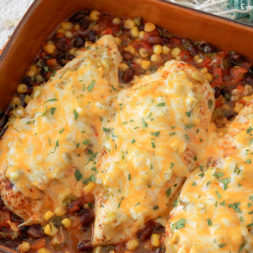

Salsa Chicken Recipe
Home

Description
We will be cooking 4 delicious pieces of salsa chicken using these main ingredients: cheddar cheese, salsa, and chicken cutlet.
This recipe will require 35 minutes of your time, including 5 minutes to prepare and 30 minutes to cook.
Ingredients
- 4 chicken breast halves
- 4 tsp taco seasoning mix
- 2 cup salsa
- 1 cup shredded cheddar cheese
- 2 tbsp sour cream (optional)
Steps
- Gather all ingredients. Preheat the oven to 375 degrees F (190 degrees C). Lightly grease a 9x13-inch baking dish.
- Place chicken breasts in the prepared dish. Sprinkle seasoning mix on both sides of chicken breasts.
- Pour salsa on top.
- Bake in the preheated oven until chicken is tender and juicy and the juices run clear, 25 to 35 minutes.
- Sprinkle chicken evenly with cheese.
- Continue baking until cheese is melted and bubbly, 3 to 5 minutes more.
- Top with sour cream and serve.